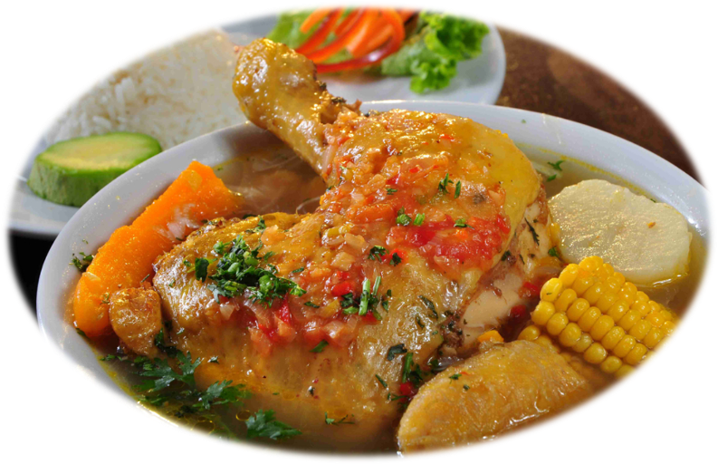

The dish of the Roman emperors, lasagna is one of the most pure, rather authentic dishes of all time born to be glamorous, delicious, and to satisfy the most difficult requirements of the old emperors during the Roman empire.
the Lasgana can be compared with sazuki in Greece, but let's face it, it wasn't and it's not that popular as lasagna is nowadays